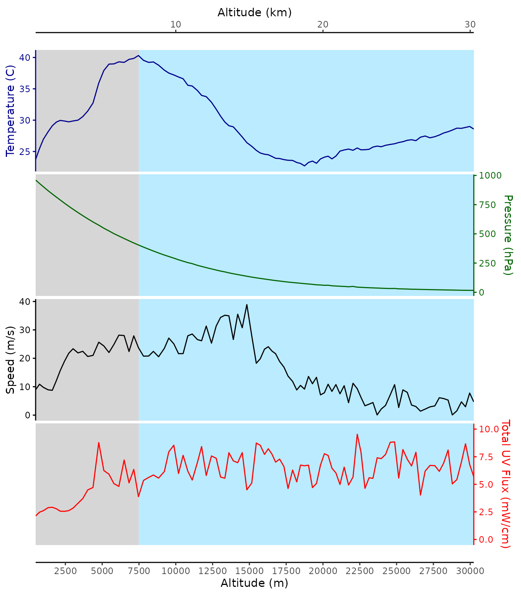

ggstackplot examples
examples.RmdExample 1: high altitude balloon flight
Load example data
The data in this example are from measurements acquired on a scientific high altitude balloon flight. Caro, T.A., Wendeln, M., Freeland, M. et al. Ultraviolet light measurements (280–400 nm) acquired from stratospheric balloon flight to assess influence on bioaerosols. Aerobiologia 35, 771–776 (2019). https://doi.org/10.1007/s10453-019-09597-9
hab_data <- readRDS("HAB_example_data.RDS") |>
slice_head(n = 100)
head(hab_data)
#> # A tibble: 6 × 5
#> `Temperature (C)` `Pressure (hPa)` `alt (m)` speed `Total UV Flux (mW/cm)`
#> <dbl> <dbl> <dbl> <dbl> <dbl>
#> 1 23.7 961. 480. 8.94 2.13
#> 2 25.5 932. 744. 10.9 2.47
#> 3 27.0 903. 1006 9.77 2.61
#> 4 28.2 869. 1327. 8.90 2.88
#> 5 29.1 841. 1612. 8.74 2.92
#> 6 29.7 815. 1889. 12.2 2.78Visualize example data
hab_data |>
ggstackplot(
x = `alt (m)`,
y = c(`Temperature (C)`, `Pressure (hPa)`, `Speed (m/s)` = `speed`, `Total UV Flux (mW/cm)`),
color = c("darkblue", "darkgreen", "black", "red"),
alternate_axes = TRUE,
switch_axes = TRUE,
shared_axis_size = 0.3,
overlap = 0.1,
template =
ggplot() +
scale_x_continuous(
name = "Altitude (m)",
n.breaks = 12,
sec.axis = sec_axis(
name = "Altitude (km)",
trans = ~ . / 1000
),
expand = c(0, 0)
) +
expand_limits(x = 0) +
geom_rect(ymin = -Inf, ymax = Inf,
xmin = 0, xmax = 7500,
fill = "lightgray", color = NA,
alpha = 0.1) +
geom_rect(ymin = -Inf, ymax = Inf,
xmin = 7500, xmax = 35000,
fill = "lightblue1", color = NA,
alpha = 0.1) +
theme_stackplot(),
add = list(
`Temperature (C)` = geom_path(),
`Pressure (hPa)` =
geom_path() +
theme(axis.text.x = element_text(angle = 45, hjust = 0)),
`Speed (m/s)` = geom_path(),
`Total UV Flux (mW/cm)` =
scale_y_continuous(limits = c(0, 10), sec.axis = dup_axis()) +
geom_path()
)
)
#> Scale for y is already present.
#> Adding another scale for y, which will replace the existing scale.